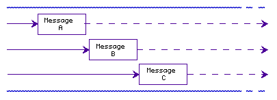

<!--NewPage-->
<!-- Created by Masa Maeda and Arturo Bejar on 06.04.97  -->
<!-- Copyright 1997 Electric Communitites. -->
<!-- All rights reserved worldwide.  -->
<!-- Proprietary and confidential. -->
<HTML>
<HEAD>
<pre><a href="ExHndl1.html">Previous</a>  <a href="ExHndl3.html">Next</a>  <a href="ExHndlI.html">Index</a>  <a href="http://www-int.communities.com">EC internal web page</a></pre>
<TITLE>Exception Handling: Page 2</TITLE>
</HEAD>
<BODY>
<P><HR WIDTH="100%" SIZE=2></P>
<P>&nbsp;</P>
<B><P>Molto Deliberato: General Structure</P></B>
<P>The case under analysis consists on sending multiple E messages optimistically and storing the results of successful computations. Optimistic computation allows the runtime queue (hereafter runtime) to process messages and send results in no particular order. Figure 1 illustrates a case in which three lines of computation, one per E message, are being processed by the runtime. Although the messages enter the runtime in a given order, the runtime processes them as optimistically convenient and so their completion can take place in any order.
</P>
	
<P><HR WIDTH="90%" SIZE=3></P>
<h2></h2>
<P ALIGN="CENTER">Figure 1. Lines of computation in the runtime queue</P>
<P><HR WIDTH="90%" SIZE=3></P>

<P>When an exception is thrown, to assume that the instance variable(s) value in the catching object correspond to those in the current line of computation is wrong.  That is, because of optimistic computation there is no way to predict which line of computation will be in execution when an exception is thrown and so it is likely that the exception is not related to the current line of computation at all. Therefore the exception recovery code must rely on the value of the catching object's instance variables rather than those of the current line of computation to recover properly. The problem confronted is thus how to ensure that the right information is recovered when an exception is thrown, i.e., which state an exception thrown belongs to.
</P>
<P>
A method that includes exception handling should follow a structure similar to the one shown below. Class and instance variables should be created and updated accordingly to cope with the changes of value for the different lines of computation. The optimistic computation considered should be within etry's closure and the exception handling code to be computed, had an exception been thrown, should be within <FONT FACE="Courier">ecatch</FONT>'s closure.
</P>

<P><HR WIDTH="90%" SIZE=3></P>
<PRE>
	eclass Foo {
	  exception handling class variables;
	  method uFoo(Bar bar, Bud bud) {
	    exception handling instance variables;
	    etry {
	      bar &lt- uBar(bud);
	    } ecatch {
	      exceptionRecoveryCode;
	    }
	  }
	}
	
	eclass Bar {
	  method uBar(...) {
	    ...
	  }
	}
</PRE>
<P><HR WIDTH="90%" SIZE=3></P>
<P>Lines of computation could be:</P>
<PRE>
		kindFoo myFoo = new kindFoo;
		myFoo &lt- uFoo(barOne, budOne);
		myFoo &lt- uFoo(barTwo, budTwo);
		myFoo &lt- uFoo(barThree, budThree);
</P>

<P><HR WIDTH="100%" SIZE=2></P>

<pre><a href="ExHndl1.html">Previous</a>  <a href="ExHndl3.html">Next</a>  <a href="ExHndlI.html">Index</a>  <a href="http://www-int.communities.com">EC internal web page</a></pre>

</BODY>
</HTML>




